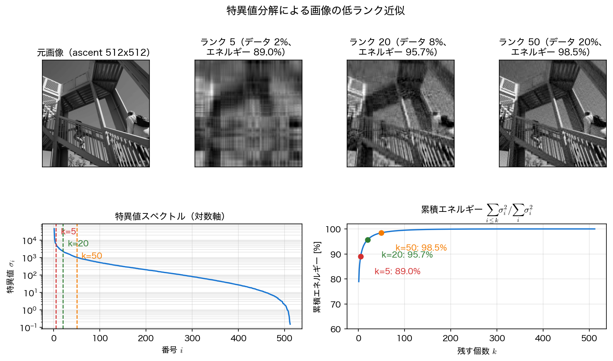
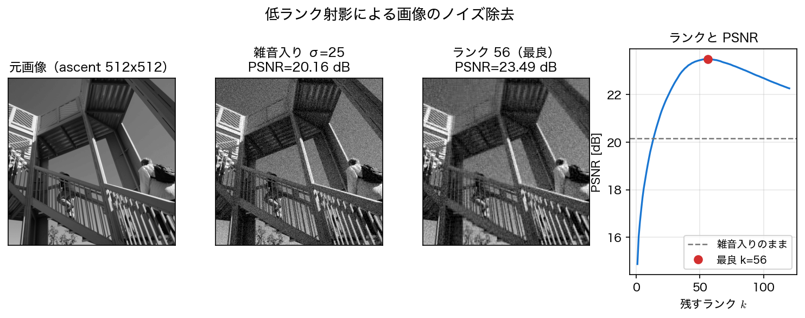

画像圧縮とノイズ除去
前ページの Eckart–Young の定理は「階数 \(k\) で切ればこれだけの誤差になる」という保証を与えた。では実際のデータで、\(k\) をどこまで小さくできるのか。もっとも見て分かりやすい題材が 画像 である。
画像を行列として見る
グレースケール画像は、画素の明るさを並べた \(m\times n\) の行列そのものである。\(512\times512\) なら \(262144\) 個の数だが、隣り合う行や列は互いによく似ている ── つまり 行どうし・列どうしに強い相関がある。相関のある行列は特異値の減り方が速く、少数のモードで大部分が再現できる。
scipy.datasets.ascent() は \(512\times512\) の実写真を返す。ネットワークが使えない環境のために、手続き的に生成した画像へのフォールバックも付けておく。
import numpy as np
try:
from scipy.datasets import ascent
img, label = ascent().astype(float), "ascent 512x512"
except Exception: # ダウンロードできない環境向け
n = 256
xx, yy = np.meshgrid(np.linspace(-3, 3, n), np.linspace(-3, 3, n))
img = (np.sin(2*xx)*np.cos(1.5*yy) + 0.6*np.exp(-(xx**2 + yy**2))
+ 0.3*np.sign(np.sin(4*xx + 2*yy)))
img = 255*(img - img.min())/(img.max() - img.min())
label = "合成画像 256x256"
m, n = img.shape
U, S, Vt = np.linalg.svd(img, full_matrices=False)
cum = np.cumsum(S**2)/(S**2).sum()
print(f"{label}: 階数 = {np.linalg.matrix_rank(img)}")
print(f"σ_1 = {S[0]:.1f} σ_min = {S[-1]:.3f} 比 = {S[0]/S[-1]:.1f}")
print(f"上位 10 個で全エネルギーの {cum[9]:.2%}")
数学的な階数は \(512\) で、フルランクである。にもかかわらず 上位 \(10\) モードだけで全エネルギーの \(92.65\%\) を占める。\(\sigma_1\) と \(\sigma_{512}\) の比は \(30\) 万倍で、下位のモードはほとんど寄与していない。この「フルランクだが実質的には低ランク」という状況が、圧縮が効く条件である。
階数 \(k\) 再構成と圧縮率
階数 \(k\) の近似 \(A_k=\sum_{i\le k}\sigma_iu_iv_i^\top\) を保存するのに必要な数は、\(u_i\) が \(m\) 個・\(v_i\) が \(n\) 個・\(\sigma_i\) が \(1\) 個で \(k(m+n+1)\) 個である。元の行列は \(mn\) 個だから、圧縮率 は
となる。\(512\times512\) なら \(k=50\) で約 \(1/5\) である。同時に、残したエネルギーの割合（累積エネルギー）
と、相対誤差 \(\lVert A-A_k\rVert_F/\lVert A\rVert_F\) を見る。前ページの Eckart–Young より、この \(2\) つは「和が \(1\) になる」関係にある（二乗して足すと \(1\)）。
for k in (5, 20, 50, 100):
Ak = (U[:, :k] * S[:k]) @ Vt[:k, :]
rel = np.linalg.norm(img - Ak, "fro")/np.linalg.norm(img, "fro")
print(f"k={k:3d}: データ量 {k*(m + n + 1)/(m*n):6.2%} "
f"エネルギー {cum[k-1]:7.3%} 相対誤差 {rel:.4f}")
k= 5: データ量 1.96% エネルギー 89.041% 相対誤差 0.3310
k= 20: データ量 7.82% エネルギー 95.722% 相対誤差 0.2068
k= 50: データ量 19.55% エネルギー 98.456% 相対誤差 0.1243
k=100: データ量 39.10% エネルギー 99.483% 相対誤差 0.0719
\(k=5\) ではデータ量 \(2\%\) でエネルギーの \(89\%\) を再現するが、相対誤差は \(33\%\) もある。エネルギーの割合と見た目の忠実さは別物 で、\(89\%\) という数字ほど画像は似ていない（下の図の左から \(2\) 番目を見るとよい）。\(k=50\) でようやく細部の縞模様が戻り、相対誤差が \(12\%\) に下がる。
逆に、目標のエネルギーから必要な \(k\) を求めることもできる。
for e in (0.90, 0.95, 0.99):
k = int(np.searchsorted(cum, e)) + 1
print(f"エネルギー {e:.0%} に必要な k = {k:3d} "
f"（データ量 {k*(m + n + 1)/(m*n):.1%}）")
エネルギー 90% に必要な k = 6 （データ量 2.3%）
エネルギー 95% に必要な k = 17 （データ量 6.6%）
エネルギー 99% に必要な k = 69 （データ量 27.0%）
エネルギーを \(90\%\) から \(99\%\) に上げるには \(k\) を \(6\) から \(69\) へ、\(11\) 倍にしなければならない。最後の数 \(\%\) にもっとも費用がかかる ── この収穫逓減の形は、第12回で見た展開係数の減衰と同じ構造である。

カラー画像とその他の実務上の注意
カラー画像は RGB の \(3\) 枚を別々に SVD するか、\((m\times n)\times3\) の行列にまとめて扱う。また、ここでは浮動小数点数で数えたが、実際の保存では \(u_i,v_i\) を量子化する必要があり、圧縮率はさらに変わる。SVD 圧縮は実用の画像形式としては使われていない（JPEG の離散コサイン変換のほうが安く高性能である）。ここで学ぶ価値は、同じ操作がそのまま次ページの次元削減や第14回のモード分解になる、その一般性のほうにある。
低ランク射影によるノイズ除去
低ランク近似は圧縮だけの道具ではない。雑音を落とす のにも使える。理屈はこうである ── 信号の成分は少数の特異値に集中するが、白色雑音はどの方向にも均等に散らばるので、多数の小さい特異値に薄く広がる。したがって上位だけを残せば、信号を保ったまま雑音の大半を捨てられる。
まず雑音がスペクトルをどう変えるかを見る。
rng = np.random.default_rng(0)
noisy = img + rng.normal(0, 25.0, img.shape)
Un, Sn, Vtn = np.linalg.svd(noisy, full_matrices=False)
for name, s in (("元画像 ", S), ("雑音入り", Sn)):
print(f"{name}: σ_1={s[0]:9.1f} σ_100={s[99]:8.2f} σ_300={s[299]:7.2f}")
print(f"雑音のみの σ_1 ≈ 25*(√m+√n) = {25*(np.sqrt(m) + np.sqrt(n)):.1f}")
元画像 : σ_1= 45559.5 σ_100= 515.39 σ_300= 81.34
雑音入り: σ_1= 45572.7 σ_100= 978.29 σ_300= 434.16
雑音のみの σ_1 ≈ 25*(√m+√n) = 1131.4
先頭の特異値は \(45559.5\) から \(45572.7\) へ \(0.03\%\) しか動かないのに、\(300\) 番目は \(81.3\) から \(434.2\) へ \(5\) 倍以上に跳ね上がっている。この帯域はもはや信号ではなく雑音である。実際、標準偏差 \(\sigma\) の乱数行列の最大特異値はおよそ \(\sigma(\sqrt m+\sqrt n)\) で、ここでは \(1131\) ── 上位の信号成分よりずっと小さく、下位の信号成分よりずっと大きい。この高さが「信号と雑音の境目」の目安 になる。
画質の指標には PSNR（peak signal-to-noise ratio）
を使う（\(L=255\) は画素値の最大値）。単位は dB で、大きいほど元画像に近い。
def psnr(ref, est, peak=255.0):
return 10*np.log10(peak**2/np.mean((ref - est)**2))
print(f"雑音入りのまま: PSNR = {psnr(img, noisy):.2f} dB")
for k in (5, 20, 40, 60, 100):
den = (Un[:, :k] * Sn[:k]) @ Vtn[:k, :]
print(f"k={k:3d}: PSNR = {psnr(img, den):.2f} dB")
ks = np.arange(1, 121)
pk = [psnr(img, (Un[:, :k]*Sn[:k]) @ Vtn[:k, :]) for k in ks]
kb = int(ks[int(np.argmax(pk))])
print(f"最良: k={kb} PSNR = {max(pk):.2f} dB")
雑音入りのまま: PSNR = 20.16 dB
k= 5: PSNR = 17.67 dB
k= 20: PSNR = 21.31 dB
k= 40: PSNR = 23.18 dB
k= 60: PSNR = 23.47 dB
k=100: PSNR = 22.68 dB
最良: k=56 PSNR = 23.49 dB
PSNR は \(k\) に対して 単調ではなく、\(k=56\) で最大 になる。小さすぎる \(k\) では信号まで削ってしまい（\(k=5\) は雑音入りのままより悪い \(17.67\) dB）、大きすぎる \(k\) では雑音を拾い直す（\(k=100\) で \(22.68\) dB に戻る）。この山の頂点を選ぶことが「ランクの選択」であり、第14回の DMD でも同じ判断が必要になる。

真値を知らずに \(k\) を選ぶには
上の \(k=56\) は「元画像を知っている」から求まった値で、実際のノイズ除去では使えない。現場では (1) 特異値スペクトルに肘（急に傾きが変わる点）を探す、(2) 雑音の大きさ \(\sigma\) が分かるなら \(\sigma(\sqrt m+\sqrt n)\) 近辺で切る、(3) データを分割して交差検証する、といった方法をとる。「真値との誤差が最小になる \(k\)」を真値なしで当てる問題 は、それ自体が研究対象である。Gavish と Donoho は、\(n\times n\) の正方行列に標準偏差 \(\sigma\) の白色雑音が乗る場合、しきい値を
にとるのが漸近的に最適だと示した。この画像（\(n=512\)、\(\sigma=25\)）では \(\tau=1306\) で \(k=52\)、PSNR は \(23.47\) dB ── 真値を使って選んだ最良値 \(23.49\) dB にほぼ届く。\(\sigma\) が分からないときは、観測された特異値の 中央値 \(y_\mathrm{med}\) を使って \(\tau=2.858\,y_\mathrm{med}\) とする（係数 \(2.858\) が掛かる相手は \(\sigma\sqrt n\) ではなく中央値である点に注意）。ここでは \(y_\mathrm{med}=530.4\) から \(\tau=1516\)、\(k=41\) で \(23.23\) dB になる。ちなみに上の (2) の目安 \(\sigma(\sqrt m+\sqrt n)=1131\) では \(k=69\)、\(23.34\) dB である。
打ち切りは低域通過フィルタの親戚
第4回で、雑音を含む信号のフーリエ係数のうち高周波側を捨てて平滑化した。あれは「あらかじめ決めた基底（三角関数）の上での打ち切り」である。ここでやったのは「データ自身から作った基底の上での打ち切り」で、構造はまったく同じである。違いは、基底をデータに合わせて選ぶぶんだけ、同じ本数でより多くのエネルギーを説明できる 点にある。
まとめ
- グレースケール画像は行列そのもので、行・列の相関が強いため特異値が速く減衰する。
ascent（\(512\times512\)、フルランク）でも 上位 \(10\) モードで全エネルギーの \(92.65\%\) を占める。 - 階数 \(k\) 再構成の保持データ量は \(k(m+n+1)/(mn)\)。\(k=50\) で データ量 \(19.6\%\)・エネルギー \(98.5\%\)・相対誤差 \(0.124\) となる。エネルギー \(99\%\) には \(k=69\) が要り、最後の数 \(\%\) に費用が集中する。
- エネルギーの割合と見た目の忠実さは一致しない。\(k=5\) はエネルギー \(89\%\) でも相対誤差 \(33\%\) で、視覚的にはぼやける。
- 白色雑音は全モードに均等に散らばるので、上位だけ残す 低ランク射影がノイズ除去になる。\(\sigma=25\) の雑音で PSNR は \(20.16\to23.49\) dB に改善した。
- ただし PSNR は \(k\) に対して山形で、最適な \(k\)（ここでは \(56\)）が存在する。小さすぎれば信号を削り、大きすぎれば雑音を拾う。真値なしで \(k\) を選ぶ方法は別に用意する必要がある。
次は、同じ低ランク近似をデータ解析の言葉で読み直す PCA・POD と擬似逆行列 に進む。